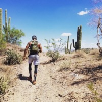

"Building a career in programming."
Hi, my name is Terrance Larkin and I am excited to share the beginning stages of my programming career with you. I currently reside in the Rough Valley in Southern Oregon, specifically Medford, OR. I moved to the area in February from Phoenix, AZ. I lived in Phoenix, AZ for 6 years, but I was orginally born and raised in South Bend, IN.
Moving to Southern Oregon was one of the best things I've done. One of the main reasons is all of the activities that one can experience in nature. I am an outside kind of guy so being in this area is dream come true. Here is a list of some of my favorite things to do:
I gradutated from Indiana State University in 2010 with a communitcations degree. I was a basketball player in college and I had an opprotunity to play professionally overseas for 4 years. After basketball, I worked in finance as an underwriter for 9 years. Due to the lack of growth in the finance world, I decided to look for a career change, and landed on programming and web devlopment.
I am extremely excited about my future in programming. The first project is about some of the cool places I've been to. It also has a few images of my top sites. The second project is a page dedicated to my pets. This page also has images of my beautiful babies. Both project languages are HTML. Here are a list of projects that I have been working on so far: